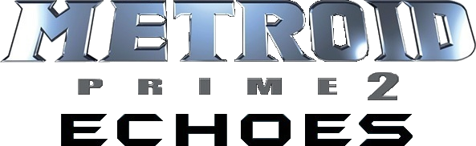

Metroid Prime 2: Echoes

| Release Date: | November 15th, 2004 |
| Genre: | First Person Shooter Metroidvania |
| Developer: | Retro Studios |
| Platform: | GameCube, Wii, & Wii U |
| Details: | Wikipedia |
Metroid Prime 2 is part of Metroid's prime trilogy, which are first person shooter variants of the standard Metroid series. These games flew under my radar when I was growing up with the gamecube, and didn't express interest in it till they announced Prime 1's remaster on the Switch. Played through that game and loved it! With Prime 4 right around the corner next year, I wanted to catch up with the trilogy and play through Prime 2 and 3 before it released. Took a bit longer than I expected to get through this game, but I did have to restart my progress halfway through for reasons we'll get into below. Overall was an enjoyable experience though.
Story & Worldbuilding
While the story isn't the biggest aspect of the game, it's still very present throughout the game and the mysteries of the planet unravel the further into the game you get. It's fairly detached from the story of Prime 1, but lore from the first game are present here. The game opens with a distress signal from a Galaxy Force squadron coming from the planet Aether. As Samus decends into the planet, the unstable atmosphere damages her ship, stranding her on the planet. As you explore Aether, you come to learn that some sort of apocalypse occurred here from an astroid impact, putting the planet into dimensional flux. Aether is a dying planet, as it's dimensional counterpart, Dark Aether, is taking the planet's energy to become the true Aether, and then take their war beyond Aether. Samus has to restore the planet's energy by exploring both Aether and Dark Aether, and prevent Dark Aether spreading it's destruction to the galaxy beyond.
It's a really interesting premise, and the game goes further into the lore of Aether as you scan various notes throughout your adventure. It's a fleshed out world, and it explains how the planet has fallen so far from this apocalypse. While there's a rich history to the world, you're able to learn lots about the biology of Aether from scanning various plants, animals, and machines. Many of which are hostile to you, but scanning them will tell you some information about them, along with where their weak points are. It's a nice tie between learning about the planet, and teaching you the best approach for defeating the enemies.
Gameplay
I really appreciated how the setting of the game really played into how the game felt to play. With the lore between Aether and Dark Aether, exploring the two worlds are like polar opposites from each other. While Aether has more natural enemies to fight, Dark Aether is more oppressive, with stronger enemies and a toxic atmosphere that constantly damages you when your not within Aether's light. The maps have the same overall rooms, but their layouts are quite different from each other, with different pathways accessible to the player. I was worried about how exploring Dark Aether would feel, and while it felt oppressive, it wasn't too much that hinder the gameplay.
It felt like a fairly standard metroidvania experience, with progression tied to the various different weapons and abilities. The game does encourage to explore a LOT, as there's tons of hidden items and ammo upgrades scattered around the world, multiple within the same room even! The game doesn't require that much backtracking, as I think I only encountered three moments where I was required to backtrack, which is nice as it'll give you a time to re-explore the world with your new abilities without needing to remember every detail on your first exploration. There's also a bit of collect-a-ton aspect to the game, as you're able to scan items and enemies to record in your logbook. I like this feature, as it ties gameplay to the lore, but I don't like how some of these scans are missable, making it impossible to 100% without a perfect run. I guess it encourages multiple walkthroughs, but it's more of a bummer to realize there's no way to know about your mistake till the end of the game really.
There are a couple aspects of the game that really did hinder the game, mainly that the controls are horrendous on the Wii. I originally was playing on Prime Trilogy on my Wii U, and would get so frustrated at the motion controls that it felt like a slog to get through. The lock-on feature I thought would help with that, but if an enemy moves too quickly or leaves your field of vision, it would stop the lock-on and getting it to lock back on in the middle of combat felt like it didn't work half the time. I got about halfway through the game and had to stop, just because it was getting so frustrating. Luckily, the metroid community has made PrimeHack, which is a specialized build of Dolphin that allows you to play the prime series with keyboard and mouse. This was night and day, as I was able to play back to where I was in a fraction of the time. Lock-on was still an issue, but aiming with a mouse is so much more intuitive than the wii remote.
Overall Thoughts
Not a whole lot to write home about in terms of visuals or graphics. The graphic are dated on the Wii U, but PrimeHack does allow the use of high resolution graphics, so that helped quite a bit. The music did help with the ambiance a bit, but I couldn't tell ya a single track I heard. Which I guess means they did their job of aiding the ambiance of the game, just not any tracks I'd listen to outside of the game. Overall though, the game was pretty fun to play once I switched my control scheme to something more comfortable. I'm not that bummed that I missed this game growing up, as I would've written it off due to frustration of the controls. However, it's a great experience for what a first-person metroidvania game could be like on PC. I'm surprised it's not a genre that hasn't caught on more, but perhaps with Prime 4 coming out here soon we'll see a surge in these types of games if it sells well. I'd only recommend this game if you're really into exploration or metroidvania games, and only through PrimeHack. The wii controls just isn't fun.